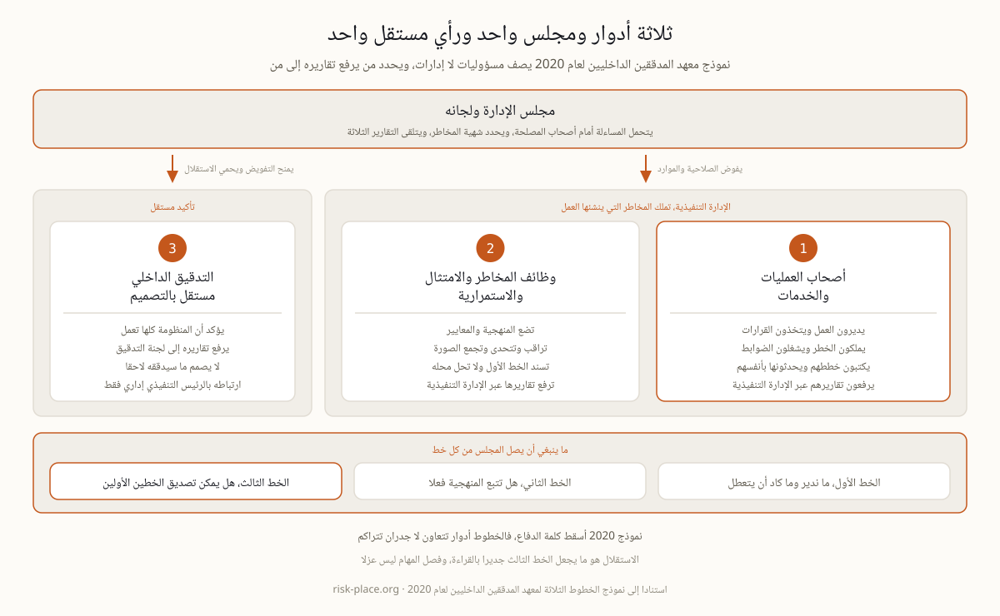

تحمل معظم السياسات حتى اليوم عبارة خطوط الدفاع الثلاثة، وهي عبارة تنتمي إلى نموذج تخلى عنه معهد المدققين الداخليين في يوليو 2020. والنسخة الحالية غيرت ثلاثة أمور ذات أثر عملي مباشر. فهي تصف أدوارا ومسؤوليات لا إدارات، ولذلك يتحول السؤال من أي صندوق تنتمي إليه هذه الوظيفة إلى سؤال أدق عن أي أنشطتها من الخط الأول وأيها من الخط الثاني. وهي تضع مجلس الإدارة داخل الصورة لا فوقها، فالتفويض ينزل والتقارير تصعد، وهذا يلزم من يعرض النموذج بتسمية من يرفع تقاريره إلى من. وأسقطت الاستعارة العسكرية، لأن كلمة الدفاع توحي بجدران متراكمة وتكافئ التباعد بين الخطوط، بينما النموذج الحالي يتوقع عملا مشتركا ويعامل إدارة المخاطر كأداة لصناعة القيمة لا لمنع الخسارة وحدها. أما ما لم يتغير ولا ينبغي أن يتغير فهو استقلال الخط الثالث. وإذا كانت سياسة المخاطر لديكم ما تزال تعدد ثلاث إدارات تحت عنوان خطوط الدفاع، فأنتم تشرحون نسخة عام 2013 لمجلس ربما قرأ النسخة الحالية.
يدور الجدل غالبا حول أربع وظائف بعينها، المخاطر وأمن المعلومات والجودة واستمرارية الأعمال. والمسميات الوظيفية ومسارات الرفع لا تحسم الأمر، وإنما تحسمه طبيعة النشاط نفسه. اسألوا عن كل نشاط سؤالا واحدا، هل ينشئ هذا النشاط تعرضا للخطر نيابة عن العمل، أم يضع منهجية ويراقب ويتحدى؟ إدارة جدار الحماية نشاط من الخط الأول حتى لو جرت داخل إدارة أمن المعلومات، لأن من ينفذ التغيير هو من ينشئ التعرض. أما وضع منهجية تحليل الأثر وملكية تقويم التمارين وتحدي جودة الخطة فأنشطة من الخط الثاني. وكتابة خطة استمرارية لخدمة لا تديرونها هي الخط الثاني وهو يؤدي عمل الخط الأول، وهذا أكثر الالتباسات شيوعا وأشدها ضررا، لأنه ينتج وثائق لا يشعر أي مالك مخاطر بأنه ملزم بالدفاع عنها. وصفحة واحدة تنهي معظم الجدل، مصفوفة مسؤوليات على الأنشطة الرئيسية للمخاطر من تحديد وتقييم وضبط ومراقبة ورفع تقارير وتصعيد، مع وظيفة مسماة في كل خانة.

أعضاء المجلس لا يحتاجون إلى الرسم، بل إلى معرفة من أين يأتي اطمئنانهم وكم منه مستقل. والنص العملي يجري على هذا النحو. الإدارة التنفيذية تدير العمل وتملك المخاطر التي ينشئها العمل. ومجموعة من الوظائف المتخصصة تضع المنهجية وتتحدى ما ترفعه الإدارة. والتدقيق الداخلي يقول إن كان الخطان الأولان جديرين بالتصديق. ثم تسلمون المجلس ثلاثة أسئلة، سؤالا لكل خط، ما الذي كاد أن يتعطل هذا الربع وما الذي تغير نتيجة له، وأين اختلف الخط الثاني مع الأول وماذا حدث بعد ذلك، وما نسبة التأكيد المعروض أمامنا المستقلة عن التنفيذيين الذين يجري تقييمهم. والإجابة الصادقة عن السؤال الثالث في معظم المؤسسات نسبة صغيرة، وهذا الرقم لا الرسم هو الحوار الحقيقي. وحدود المساءلة التي لا تفوض، وما يفترض أن يطلبه أعضاء المجلس، مشروحة في صفحة دور مجلس الإدارة في المرونة.
النموذج الذي يعيش على شريحة عرض ليس ضبطا. وخمس وثائق تجعله واقعا. سياسة إدارة مخاطر تسمي ثلاث مجموعات من المسؤوليات لا ثلاث إدارات. ومواثيق لوظيفة المخاطر وللتدقيق الداخلي يعتمدها المجلس أو لجنة التدقيق وتنص على الاستقلال والوصول إلى المعلومة وحق التصعيد. ومصفوفة المسؤوليات على الأنشطة الرئيسية. وخريطة تأكيد تبين لكل خطر جوهري ولكل خدمة مهمة أي خط يقدم أي دليل وبأي وتيرة وإلى من. وتقويم رفع تقارير يعبر فيه عن التصعيد بالساعات لا بالنوايا. ثم راقبوا أربعة مؤشرات صحة، مسائل يثيرها الخط الأول بدل أن يكتشفها الثالث، وتحد من الخط الثاني ظاهر في المحاضر لا في الممرات، وملاحظات تدقيق مقبولة بتواريخ وأسماء، وخلاف واحد على الأقل مسجل بين الخطوط خلال العام الماضي. والمنظومة التي لم تسجل أي خلاف ليست متناغمة بل صامتة. وبناء هذه البنية، وخريطة التأكيد خاصة، موضوع الوحدة M6 من برنامج ERGP.
تصميم التأكيد، من المواثيق وخريطة التأكيد إلى التقارير التي تجعل الخطوط الثلاثة مرئية لمجلس الإدارة، هو الوحدة M6 من برنامج ERGP، أول شهادة في حوكمة المرونة متاحة بالكامل باللغة العربية وبالإنجليزية أيضا. ست وحدات وستة مخرجات عملية وشهادة قابلة للتحقق.
تعرفوا على برنامج ERGP